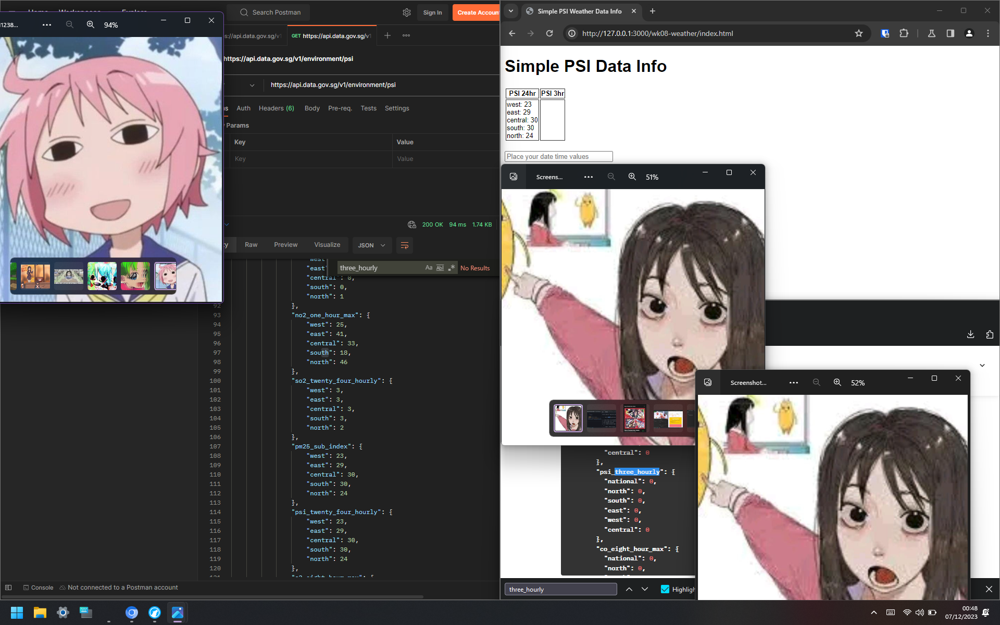

but MUST we use jquery
Week 08
it’s week 8!
APIs, cool stuff. Honestly I didn’t know Postman being free as long as
you skip logging in and just use it as a client.
Had I known about this earlier, I wouldn’t had to prod around in the
Python REPL manhandling requests while I was making
nuko.
(I should probably get back to working on it one of these days…)
I’ve worked with data.gov.sg’s APIs before, and their documentation definitely needs some polish, but alas here I am with work completed nonetheless.
JQuery is cool and all but I hate JavaScript so I’d rather not use
it.
(unless the assignment requires it, which the first one does so i used
it >:3)
I mean, you can just add an event listener to the element, but whatever.
// jquery-ful
$(document).ready(function(){
$("#btn").click(function(){
getRandomUser();
});
});
// jquery-less
document.getElementById("btnSubmit").addEventListener("click", handleBtnSubmitClick);
whatever.

also mfw no three hour psi in data.gov.sg’s api response even when the api docs say it’s there ╯°□°）╯︵ ┻━┻